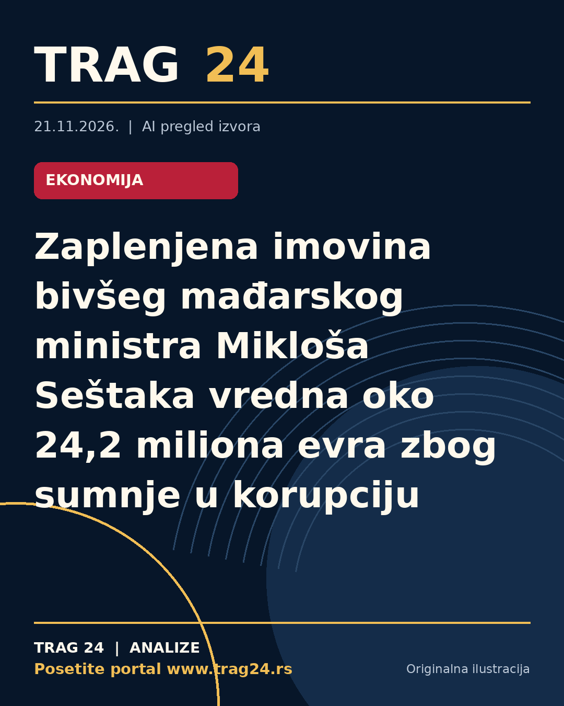

Zaplenjena imovina bivšeg mađarskog ministra Mikloša Seštaka vredna oko 24,2 miliona evra zbog sumnje u korupciju

ŠTA SE DOGODILO
Nacionalni istražni biro Mađarske u okviru krivičnog postupka zaplenio je imovinu bivšeg ministra nacionalnog razvoja Mikloša Seštaka, vrednu oko 9 milijardi forinti, što je približno 24,2 miliona evra. Zaplenjeni su njegova kuća u Kišvardi, kao i kompanija koja upravlja auto-salonom u njegovom vlasništvu. Seštak se trenutno nalazi u pritvoru, a ova mera ima za cilj da se obezbedi mogućnost eventualnog trajnog oduzimanja imovine.
HRONOLOGIJA
Mikloš Seštak bio je ministar nacionalnog razvoja u vladi Viktora Orbana od 2014. do 2018. godine, a od 2010. i poslanik Hrišćansko-demokratske narodne partije (KDNP). Krajem septembra mu je ukinut poslanički imunitet i pritvoren je. Sud je 28. oktobra produžio njegov pritvor do 30. januara 2027. godine. Sredinom novembra nadležni organi sproveli su koordinisane pretrese na nekoliko lokacija, tokom kojih su pronađene velike količine gotovog novca na mestima kao što su šume i objekti povezani s istragom.
ŠTA NAVODE IZVORI
Prema podacima istrage, Seštak i drugi osumnjičeni mogli su između 2015. i 2018. godine preko posrednika nezakonito primiti više od 11 milijardi forinti pomoću podmićivanja u vezi sa ugovorima o prevozu putnika za kompaniju Volanbus. Navodi se i da je novac dobijan i kroz državne investicione projekte, pri čemu su pojedine građevinske kompanije mogle da se obavežu da im vrate deo vrednosti ugovora kao nezakonitu korist. Premijer Mađarske Peter Mađar potvrdio je zaplenu imovine i osumnjičenost Seštaka, dok su informacije o pronađenom novcu pronađenom tokom pretresa i dalje predmet istrage. Advokat bivšeg ministra tvrdi da pronađeni novac nije njegov.
ŠTA JE POTVRĐENO
Potvrđeno je da je Nacionalni istražni biro odredio privremenu meru oduzimanja imovine Mikloša Seštaka u vrednosti od oko 9 milijardi forinti, uključujući nekretnine i preduzeća. Seštak se nalazi u pritvoru na osnovu odluke suda, a istraga je usmerena na sumnju u korupciju vezanu za državne ugovore, posebno za prevoz putnika i investicione građevinske projekte.
ŠTA NIJE POTVRĐENO
Nije potvrđeno da pronađeni novac pronađen tokom pretresa u šumama i drugim lokacijama pripada Miklošu Seštaku. Takođe, detalji i konačni sudski ishodi u vezi sa sumnjama u korupciju još nisu dostupni. Nije poznato da li će privremena mera oduzimanja imovine prerasti u trajno oduzimanje.
ŠTA OSTАJE OTVORENO: Ostaje nepoznato kako će se razvijati krivični postupak i da li će biti dodatnih hapšenja ili zaplena. Takođe nije jasno u kojoj meri će se potvrditi ili odbaciti sumnje oko navodne korupcije i nezakonitog bogaćenja bivšeg ministra. Dalji sudski proces i eventualna presuda ostaju predmet budućih izvještaja.
Izvori
- https://www.telegraf.rs/vesti/svet/4437284-bivsem-madjarskom-ministru-zaplenjena-imovina-vredna-242-miliona-evra-oglasio-se-i-peter-madjar
- https://nova.rs/vesti/svet/madjar-orbanovom-bivsem-ministru-zaplenjena-imovina-od-24-miliona-evra/
- https://n1info.rs/svet/orbanovom-bivsem-ministru-zaplenjena-imovina-od-24-miliona-evra/
Ova analiza je pripremljena uz pomoć veštačke inteligencije na osnovu javno dostupnih izvora. Navodi izvora nisu nužno nezavisno potvrđeni.